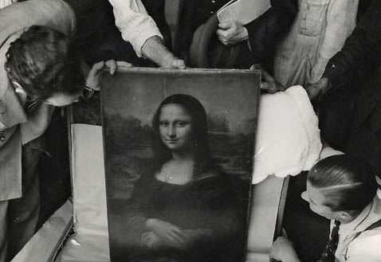
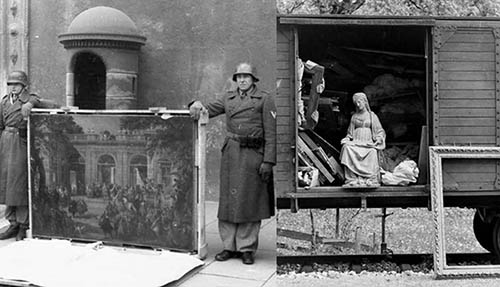

The vast cultural treasures of Europe were targeted for theft and destruction.
Why art?

The Stealing of the art and architecture of Europe was an effective means of gaining power and plundered wealth for the Nazi party and its leaders in Germany before and throughout the second world war.
They systematically stole art and wealth from European Jews, and others, in an attempt to destroy the culture of Europe and replace it according to their own destructive ideology.
Systematic, Industrial Theft

Often referred to as Nazi plunder, the stealing occurred from 1933 until the end of the war. The theft and transport of artworks was mostly carried out by military units known as the Kunstschutz. In addition to gold, silver and currency, cultural items of great significance were stolen, including paintings, ceramics, books, and religious treasures.
Most of these items were recovered by agents of the Monuments, Fine Arts, and Archives program (MFAA), affectionately referred to as the Monuments Men, on behalf of the Allies immediately following the war, but many are still missing to this day. Some are the subject of ongoing controversy and legal proceeding.
The Rape of Europa
Seeing the documentary film,
The Rape of Europa,
is an excellent way to learn the story.
From the film's web site: In a journey through seven countries, the film takes the audience into the violent whirlwind of fanaticism, greed, and warfare that threatened to wipe out the artistic heritage of Europe. For twelve long years, the Nazis looted and destroyed art on a scale unprecedented in history. But young art professionals as well as ordinary heroes, from truck drivers to department store clerks, fought back with an extraordinary effort to safeguard, rescue and return the millions of lost, hidden and stolen treasures.
As time passes and first-hand knowledge of this period in history fades, it is expected that many lost treasures will surface. The art world is watching and waiting... and this vigilance is as powerful as any bomb, because it reminds would-be oppressors that the artist's muse bears witness to history and her admirers will not forget.